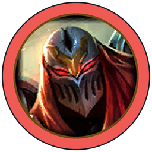

part 5 · PvP combat balancing tools and tips
Zoning & Spacing
ZoningPositioning your character’s attacks to control where your opponent moves.
vs

SpacingPositioning your character’s hurtbox to influence where your opponent moves.
Together: space and timing create unequal advantages, so each side has ranges that favor it and ranges that don’t.
comparing Ashe and Zed · danger depends on distance
Who Gets to Deal Damage?
why zoning is so powerful · the distance problem in 2D
Range Grows the Floor You Threaten
3 movement types in PvP combat · keeping damage capability above 0
Walk, Lunge or Gap Close